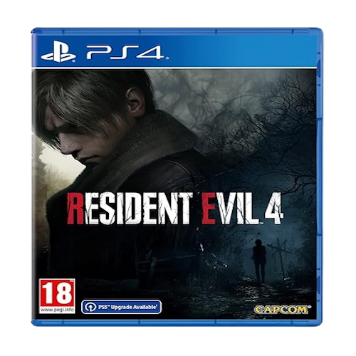

Resident Evil 4 Remake:
Resident Evil 4 is a 2023 survival horror game developed and published by Capcom. A remake of the 2005 game Resident Evil 4, players control the US agent Leon S. Kennedy, who must save Ashley Graham, the daughter of the United States president, from the mysterious Los Illuminados cult. The remake has an updated plot, new visuals, characters, cast, and altered gameplay.